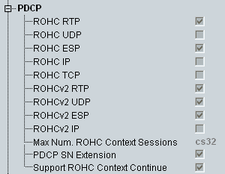

PDCP UE Capabilities
The following UE capability information indicates in which way the UE supports the packet data convergence protocol (PDCP) described in 3GPP TS 36.323.

PDCP UE capabilities
Support of the robust header compression profiles with the profile identifiers 0x0001 to 0x0004, 0x0006, 0x0101 to 0x0104.
Remote command:Maximum number of header compression context sessions supported by the UE.
Remote command:Support of 15-bit PDCP sequence numbers.
Remote command:Support of ROHC context continuation during a handover.
Remote command: